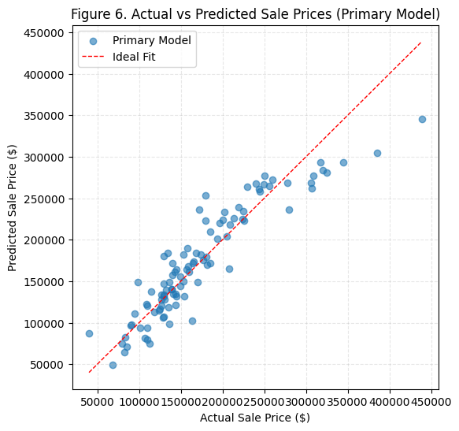

Developed and evaluated four linear regression models to predict housing sale prices using different feature selection strategies. The study compared correlation-based, random, least-correlated, and domain-informed feature selection approaches to assess predictive accuracy, model robustness, and generalization performance.
The strongest-performing model achieved an R² of 0.85 on training data and 0.82 on unseen test data, demonstrating strong predictive accuracy and generalization performance.
Tools: Python, Pandas, NumPy, Scikit-learn, Matplotlib, Jupyter Notebook
Additional projects are currently being prepared for publication to this portfolio.
Recent completed work includes exploratory analytics, database projects, and cloud-based data workflows.